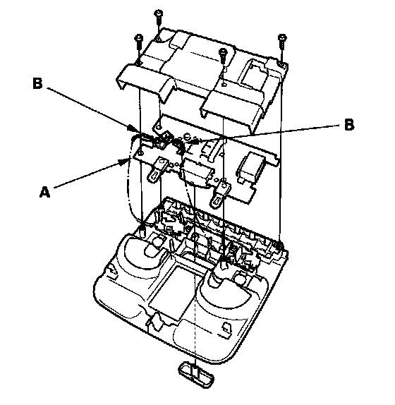
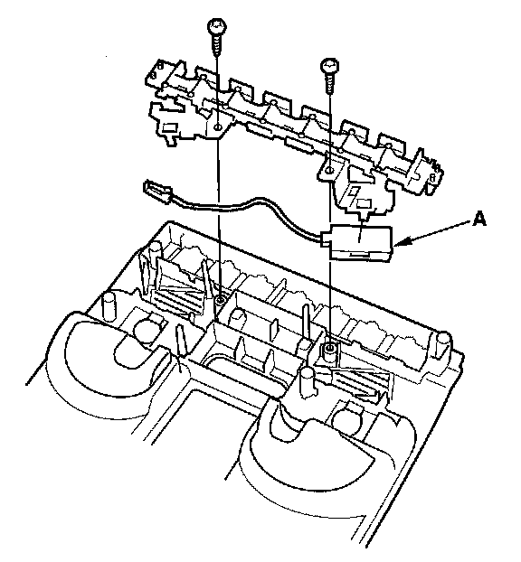

Cellular Phone Microphone: Service and Repair
HFL/Navigation Microphone Removal/InstallationNOTE:
- Put on gloves to protect your hands.
- Take care not to scratch the dashboard and related parts.
- Lay a workshop towel under the parts when working on them to protect the face panel from scratches or other damage.
1. Remove the roof console.

2. Remove the screws and the printed circuit board (A).
3. Disconnect the connectors (B) from the printed circuit board.

4. Remove the screws and the microphone (A).
5. Install the microphone in the reverse order of removal.